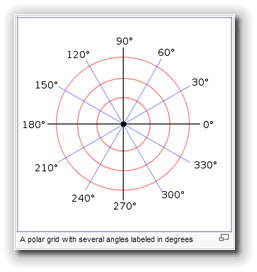
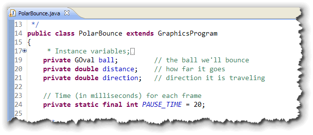
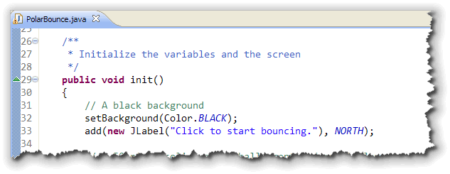
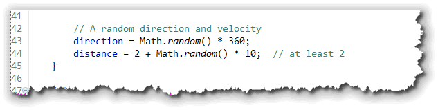
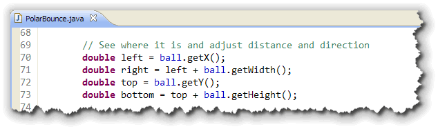
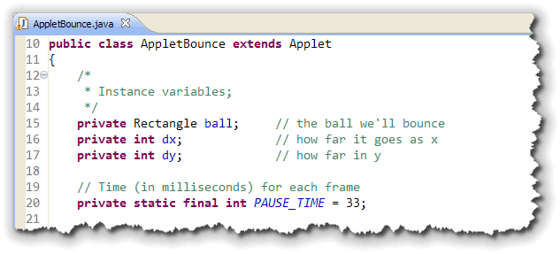
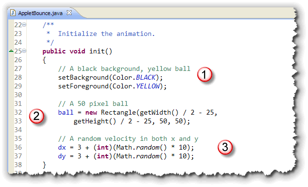
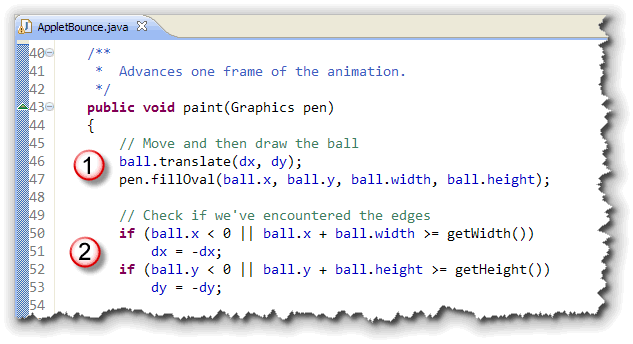
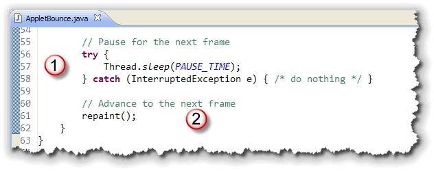
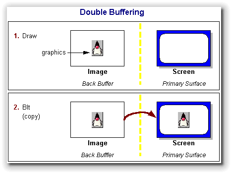

Learning how to handle events,
like you did in the last lesson, allows you to create
interactive programs that respond to user input.
Animation, the topic of this lesson, will let you
write programs that are visually exciting.
 And, when you combine interactivity and animation, you'll have
everything you need to create your own video game empire.
And, when you combine interactivity and animation, you'll have
everything you need to create your own video game empire.
So, just what is animation? Here's a description from the JTF tutorial, along with a couple of illustrations from Wikipedia.
 In computer graphics, the process of updating a graphical
display so that it changes over time is called animation.
Implementing animation typically involves displaying an initial
version of the picture and then changing it slightly over time
so that the individual changes appear continuous from one
version of the picture to the next.
In computer graphics, the process of updating a graphical
display so that it changes over time is called animation.
Implementing animation typically involves displaying an initial
version of the picture and then changing it slightly over time
so that the individual changes appear continuous from one
version of the picture to the next.
This strategy is analogous to classical film animation in which cartoonists break up the motion of the scene into a series of separate frames. The difference in time between each frame is called a time step and is typically very short. Movies, for example, typically run at 30 frames a second, which makes the time step approximately 33 milliseconds.
If you want to obtain smooth motion in Java, you need to use a time step around this scale or even faster.
ACM Graphics Animation
Let's start out by writing the traditional bouncing ball program. Unlike the short GIF animation from Wikipedia, the traditional bouncing-ball program is more like bouncing a ball around a billards table, assuming that there is no gravity or friction to slow things down.
Even though it's simple, I still get kind of excited when
I see the ball start bouncing! To make things a little more
interesting, instead of changing the x and
y coordinates of the ball separately, we'll make
use of the ACM GObject method movePolar()
and write our code in terms of direction and
distance.
Polar Coordinates?

What are polar coordinates? Here's an explanation from Wikipedia.In mathematics, the polar coordinate system is a two-dimensional coordinate system in which each point on a plane is determined by an angle and a distance.
The polar coordinate system is especially useful in situations where the relationship between two points is most easily expressed in terms of angles and distance; in the more familiar Cartesian or rectangular coordinate system, such a relationship can only be found through trigonometric formulation.
Of course, that's just what we need to model our bouncing ball!
The Basic Structure
The basic structure for every animation program that
uses the ACM class libraries is always the same:
 Here's what the parts do:
Here's what the parts do:
- Instance variables: the objects that you're going to move need to be defined as instance variables, since you'll interact with them inside several different methods. You'll also normally initialize the frame rate, as I've done here: 20 milliseconds means that the animation will be drawn at around 50 frames per second.
- Initialization: the
init()method is used to set up the initial state of your objects, and to intialize the parameters for your animation, such as speed and direction. - Running: the
run()method is used to animate the program. Usually, however, you'll use exactly the same version of the method, which consists of an endless loop. The real work of animating the objects is done inside youradvanceOneFrame()method. Thepause()method is used to make sure that the frame stays on screen for a certain amount of time. - Draw a Frame: the
advanceOneFrame()method is responsible for moving each of the animated objects, and adjusting their state (such as speed or direction) as necessary.
Now, let's look at each of these in terms of our PolarBounce program. (As usual, you can click the link in the preceding sentence to download the source code to your own computer, where you can run it.)
Instance Variables
Here are the instance variables used in the
PolarBounce program:

Notice that:- A
GOvalobject is used for the ball that will be bounced around the screen. - Both the distance the ball travels and the direction
(as a polar angle between 0 and 360 degrees) are
represented as
doublevariables.
As with the "skeleton" code, the frame time is defined as a constant integer. Remember that twenty milliseconds will result in a nominal fifty-frames-per-second animation.
Initialization
The first part of the initialization method initializes the
screen itself:

In addition to setting the background color to black, I added aJLabel to the top panel, so that
the user knows to kick off the animation by clicking the
mouse.
The next part to be initialized is the ball itself. I want
a 50-pixel solid yellow ball:
 After the ball is created, its added to the center of
the screen.
After the ball is created, its added to the center of
the screen.
The last part to be initialized is the direction and
distance:

I've used random numbers to initialize both of these values. To start with a random direction, I initialized that to a value between 0 and 360. To make sure that the ball is always moving, even if slowly, I used an expression that will always be between 2 and 12.Running
The running loop is almost exactly like the one
I showed you in the animation skeleton earlier:
 The only difference is the use of the ACM
The only difference is the use of the ACM waitForClick()
method before entering the loop. You can call this method without
activating any of the other event-handling steps.
Advancing the Frame
To animate the ball, we first need to move it, and then check for the results. If our move results in a collision with either the walls (on the sides) or the floor or ceiling, then we need to adjust the direction in which we're moving in anticipation of the next frame, coming up 20 milliseconds from now.
The code to move the ball is pretty straightforward; it just
uses the movePolar() method as I discussed before:

To see if we "hit the wall", the calculations are a little easier to read, if we create variables for the left, top, right and bottom edges of the ball. You can write the code without these extra variables, but then your Boolean conditions are a little "noisy":

With the variables, the conditions are pretty simple. If you've
hit the left wall (left < 0) or the right
wall (right >= getWidth()), then you need
to adjust the angle by subtracting the current directions
from 180:
 Of course that means you may end up with a negative angle
(when the current direction is greater than 180), but the
Of course that means you may end up with a negative angle
(when the current direction is greater than 180), but the
movePolar() method is smart enough to handle
that, and automatically adds 360.
When you hit the floor or the ceiling, you perform a similar calculation, only instead of subtracting from 180, you subtract from 360.
Try it Out!
You can run the PolarBounce applet in a separate window by clicking the link in this sentence.
Adding Interactivity
You can interact with the bouncing ball by using the event handling you learned about in the last lecture. If you add the line:
addMouseListeners();
to the end of the init() method, and then add
a mousePressed() method, like this:
 then whenever you click on the ball, it will head off in
a random direction.
then whenever you click on the ball, it will head off in
a random direction.
The code fragment shown here first creates a
GPoint object using the mouse location reported
by the event parameter, before seeing if the ball's bounding
rectangle contains the point. This is necessary because the
ball (and all ACM GObjects) use doubles
to represent their coordinates, while the normal coordinates
used by the event parameter are stored as int.
Making the Ball Listen
Instead of checking to see if the ball's bounding rectangle
contains the mouse point, a better alternative is to have only
the ball itself listen for mouse events. Instead of adding the
"generic" addMouseListeners() code to the bottom
of your init() method, replace it with this:
 Once you've done this, you no longer need to check to see if
the mouse click is contained inside the ball. The event-handler
will only be called when the ball is clicked.
Once you've done this, you no longer need to check to see if
the mouse click is contained inside the ball. The event-handler
will only be called when the ball is clicked.
Traditional Applet Animation
To animate a traditional, non-ACM applet, you follow the same basic pattern, with these few differences:
- Use the regular applet
paint()method instead of theadvanceOneFrame()method from the ACM version. - Instead of
run(), you'll place the "pause" statement at then end of thepaint()method, and, following the pause, you'll call the applet'srepaint()method to advance to the next frame.
Let's take a quick look at AppletBounce that creates a traditional applet version of the bouncing-ball program. I'll follow the same basic structure as the previous example, so it will be easy for you to compare the two programs.
Instance Variables
Let's start by comparing the instance variables used in
PolarBounce with those of AppletBounce shown here:

- Since we aren't using the ACM classes, we have no graphical
GRectobject to represent the ball. Instead, we'll use anawt.Rectangleobject to represent the bounding box that will enclose our ball when we paint it on the screen. - Also, since we aren't using the
GObjectclass, we don't have amovePolar()method. That means that to animate our ball, we'll need to adjust the position of the rectangle. The two variablesdxanddywill contain the distance used to move in each of the two axis.
Note also that since the applet graphics units are in pixels,
I've used int for the variable types.
Initialization
The initialization of the two programs is also similar. Here's
the code for the applet version:

- The applet background is also set to black, but, since there
is no
waitForClick()method, I didn't bother to put up aJLabel. Also, instead of filling theGRectwith yellow, I set the foreground to yellow instead, so that the ball will automatically be painted in that color. - To create the ball, I just create a
Rectangleobject, positioned in the center just like with the ACM version. Since my ball is not a visible component, I don't have to add it to the surface of the applet, like I did with theGRectversion of the ball. - Finally, instead of initializing distance and
direction, I need to initialize the
dxanddyvariables. The calculations shown here seem to result in reasonable speed, but you can adjust them as you see fit.
Painting
To display the ball, we first use the Rectangle translate()
method to adjust the position of the ball's bounding box like this:

Then, a regularfillRect() just draws the ball.
To see if the ball hits the edges, the applet version also uses a
pair of if statments, comparing the values in the
bounding box with the width and height of the applet. In this
version, though, instead of changing the direction, we just
reverse the values of dx or dy so that
the next frame moves the ball in the opposite direction.
Pausing
Finally, to move to the next frame, we have to pause the animation
using the constant PAUSE_TIME defined earlier. Unfortunately,
the Applet class doesn't have a pause()
method, like the ACM GraphicsProgram class does.
Instead, you have to use the sleep() method in the
Thread class. As you can see, that requires you to
surround the method with some strange looking code, called a
try-catch block, like this:

The ACMpause() method actually uses Thread.sleep()
in exactly the same manner, but just hides the required
exception-handling code so that you don't have to see it.
We'll cover exception-handling and the try-catch
near the end of the semester.
Once you've waited for the current frame to paint itself, you
can move on to the next frame by simply adding a repaint()
to the bottom of the method.
Make sure you never use a loop inside the
paint() method, like you did in the ACM run()
method. The paint() method draws a single frame
of an animation, not a series of frames.
Try it Out!
You can run the AppletBounce applet in a separate window by clicking the link in this sentence. Compare it to PolarBounce and see if you can tell the difference.
Flickering
One difference you might see, if you run the two programs
next to each other, is that the applet version seems to "flicker"
more than the ACM version. That's because every time you paint
the oval on the screen, the paint() method first
erases the previous frame by using the equivalent of a
fillRect() that covers the entire applet.
Thus as each oval is drawn, your eye sees first a blank as the background is erased, and then the yellow oval is drawn over it. Even worse, since each frame last for such a short time, often only part of the oval is drawn before the erasing for the next frame begins.
The solution is to use something called double buffering, which is what the ACM program uses behind the scenes.

The code to do this is relatively complex, and really beyond what you're expected to know in this class. If you want to see how it works, though, I've created a third version of the bouncing ball program, BufferedBounce that you can download and examine at your leisure.
You can run the BufferedBounce applet in a separate window by clicking the link in this sentence and compare it to the other two versions of the bouncing-ball program.
Coming Up Next...
In this lesson, you learned to animate ACM graphical
shapes by moving and pausing them from inside the run()
method. You also learned how to animate shapes in an applet
as well.